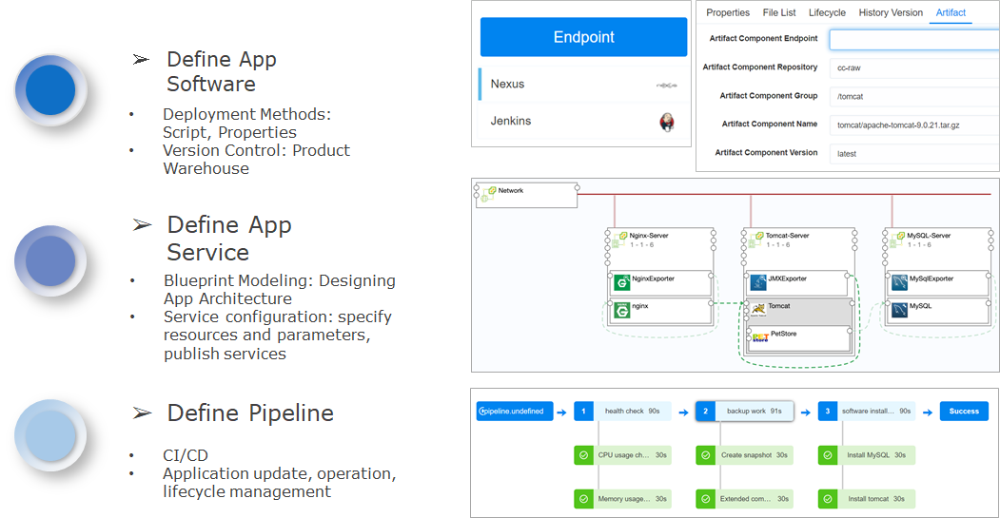

CI/CD
SmartCMP’s continuous release and continuous deployment application is achieved through software components, blueprints, and newly introduced pipelines:
Define application software: access to the mainstream product library for storage management and version control of software components. Software components associate with product warehouse and custom application deployment methods and related parameters.
Define application services: Model the application architecture through blueprint modeling; specify resource parameters and versions of related applications through service configuration.
Define the pipeline: configure the pipeline stage and various types of tasks to achieve full lifecycle management of application testing, deployment, update, operation and recycling.

SmartCMP supports permission management for continuous integration and release functions. When the administrator configures the pipeline, the administrator binds a project to the pipeline and adds global parameters to be called in the later tasks. The project team members under the project have the authority to add, edit, delete, execute, disable, lock the automation pipeline, and view the execution history of the pipeline.
1. Pipeline
SmartCMP's pipeline helps users build automated, reusable, and securely compliant applications for continuous delivery and deployment. The pipeline consists of a series of stages, each consisting of multiple tasks and environments that the software must complete before it is released to production. Currently, it supports the customization and assembly of multiple phases and tasks and can add any number of execution tasks in the stage. Through them, it is possible to design development, deployment, and operation pipelines applicable to various scenarios.
- Add a pipeline, bind a project, and add global parameters to make calls in later tasks.
Specific steps:
Click "CI/CD" - "Pipeline" in the left navigation bar, click Create, enter the name, description, project, notification to the user on the basic information page.
Set the custom properties, click the Add button, enter the name, value, description, click Create
After you have created the pipeline, click "CI/CD" - "Pipeline" in the left navigation bar to edit, delete, execute, disable or lock the pipeline.
1.1. Configuring Triggers
Customize the trigger condition of the pipeline. The trigger defines when the pipeline is automatically run. You can manually trigger the pipeline task, or you can set the policy to trigger the pipeline task automatically by the trigger. SmartCMP trigger types include: Webhook integration (support Git, Gitlab and other code repository change triggers), Jenkins triggers, timing triggers, manual triggers, and more. For example: add a configuration Gitlab event trigger, when the code is submitted to the Gitlab code repository, the repository status changes, triggering the pipeline. Specific steps:
Click "CI/CD" - "Pipeline" in the left navigation bar, click Create, click Create on the trigger page.
Enter the trigger name (Gitlab code commit), type (WEBHOOK), description (optional).
Click Create to complete trigger configuration.
1.2. Configure Phases and Tasks
Different phases can be defined according to the needs of the business, and the tasks that need to be completed are defined in each phase.
- For example, you can define different stages of software packaging, deploying test environments, and more. The task types for each phase include Jenkins Job tasks, service provision tasks, cloud resource tasks, script tasks, and more. The publisher of the pipeline can define the parameters for each task and make calls in subsequent tasks.
A task is a specific activity performed. Supports custom task types, input and output parameters, where input and output parameters refer to the parameter transfer between each task of the SmartCMP support pipeline, for example, the IP address of the newly deployed virtual machine of the previous task is transmitted to the next task for calling.
- For example, deploying tasks through a blueprint can automatically trigger a published cloud resource service to deploy cloud resources. Cloud resource tasks can automate cloud resource changes and operations and upgrade and update application software.
Specific steps in the design of the flow phase and tasks:
Click "CI/CD" - "Pipeline" in the left navigation bar, click Create, click the Add button on the process page, enter the stage name, click Add
Click Add Serial Task to fill in the task details page: task type, name, description, notification to the user, fill in the input parameters, customize the output parameters (the input and output parameters change accordingly to different task type)
- Select the wait task and fill in the wait time (s) at the input parameters
- Select the service provision task and fill in the services (services published in the service catalog) and templates at the input parameters
- Jenkins task, fill in the warehouse endpoint at the input parameters, task type, choose whether to wait for the result, if it is unstable, mark it as success to continue or mark as failure, end execution
- Select the cloud resource task, select the existing cloud resource at the input parameter, cloud resource type, operation (day2 operation and maintenance of the cloud resource includes mounting, adjusting the disk configuration, etc.)
- Execute the timeout period in the setup, execution options (Failure and continue, Failure and over), execution mode (select default execute or condition execute)
1.3. View Pipeline Execution History
Through the execution history, you can view the execution status, executor, execution time, and detailed information of each stage task execution.
Click "CI/CD" - "Execution History" in the left navigation bar to quickly locate the pipeline according to the filter conditions (item, status, start and end time).
Click on the pipeline to view the flow chart of the execution status (in progress, success, failure), executor information, start time, end time, time consumption, and complete pipeline.